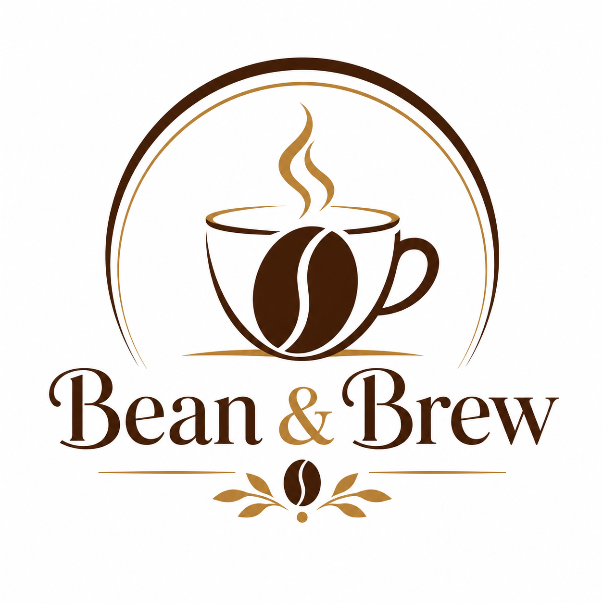

Welcome to Bean & Brew, your cozy corner for the finest coffee and delightful treats. Our passion for crafting the perfect cup of coffee is matched only by our commitment to creating a warm and inviting atmosphere for our customers. Whether you're a coffee connoisseur or just looking for a comfortable place to relax, Bean & Brew is the ideal destination.
At Bean & Brew, we source our coffee beans from the best plantations around the world, ensuring that every cup is rich in flavor and aroma. Our skilled baristas are dedicated to the art of coffee making, using state-of-the-art equipment to brew each cup to perfection. From classic espresso to innovative seasonal blends, we offer a wide variety of coffee options to satisfy every palate.
In addition to our exceptional coffee, we also offer a delectable selection of pastries and snacks, made fresh daily to complement your coffee experience. Whether you're in the mood for a flaky croissant, a rich chocolate muffin, or a savory quiche, our menu has something for everyone.
At Bean & Brew, we believe that coffee is more than just a beverage. It's a moment of joy, a break from the hustle and bustle of daily life, and an opportunity to connect with others over a shared love of great coffee.
We invite you to visit us at Bean & Brew and experience the perfect blend of quality, comfort, and community. Whether you're looking for a quiet spot to work, a place to catch up with friends, or simply a great cup of coffee, we look forward to welcoming you to our café.
Thank you for choosing Bean & Brew. We can't wait to serve you and share our passion for coffee with you!
One of our regular customer John Doe says: I love the atmosphere at Bean & Brew. It's the perfect place to relax and enjoy a great cup of coffee!
| Day | Opening Time | Closing Time |
|---|---|---|
| Monday | 7:00 AM | 9:00 PM |
| Tuesday | 7:00 AM | 9:00 PM |
| Wednesday | 7:00 AM | 9:00 PM |
| Thursday | 7:00 AM | 9:00 PM |
| Friday | 7:00 AM | 10:00 PM |
| Saturday | 8:00 AM | 10:00 PM |
| Sunday | 8:00 AM | 9:00 PM |